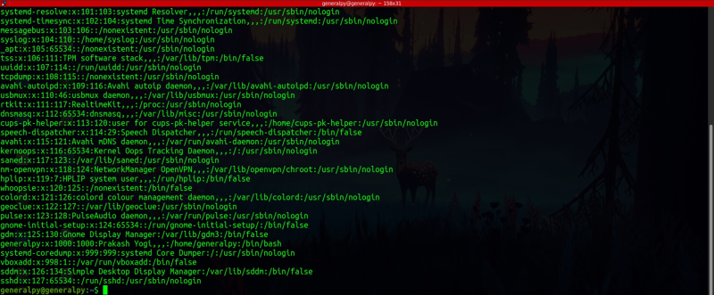
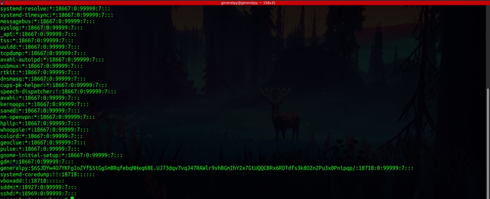
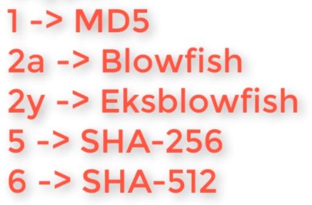

There are two files which ply important role in authentication inn Linux. These files are /etc/passwd and /etc/shadow.
/etc/passwd contains basic authentication info of the user.
The structure of /etc/passwd is :

First column contains name of user. Second column used to store password in unix era but now it stores either x which stands that user has a password which is stored somewhere else(/etc/shadow) or blank which means user has no password. Third and fourth coloumn stores user id and group id. The fifth field is a comment which some times is left blank. The sixth field is user's home directory and seventh field is the default shell for the user. If default shell is false or nologin, that user is system user or service account and is not allowed to login.
/etc/shadow is the new file in linux which stores passwords in encrypted form.It can only be readed as root. Its format is :

Each fline contains 9 colon separated fields.
First field contains username, second field contains encrypted password and other 7 fields contain details regarding password expration time like last password change etc. man page of shaadow has full desc of this file.
If password field contains * or ! then we are not able to login directly to this account . We can login inderctly by different methods such as su .
The format of password field is $encryption_type$salt$hash.
Type can have following values :

A salt combined with text password is used to enforce uniqueness. In other words same password with different salt will give a different hash.